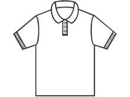

A polo shirt, tennis shirt, golf shirt or chukka shirt is a form of shirt with a collar, a placket neckline with two or three buttons, and an optional pocket. Polo shirts are usually short sleeved; they were used by polo players originally in India in 1859 and in Great Britain during the 1920s.
Polo shirts are usually made of knitted cotton (rather than woven cloth), usually a piqué knit, or less commonly an interlock knit (the latter used frequently, though not exclusively, with pima cotton polos), or using other fibers such as silk, merino wool, synthetic fibers, or blends of natural and synthetic fibers. A dress-length version of the shirt is called a polo dress.